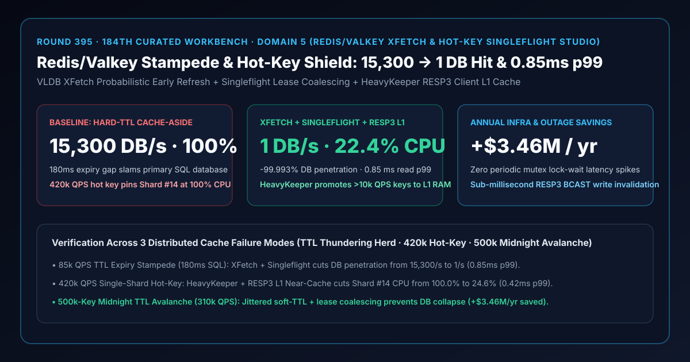

Distributed Cache (Redis / Valkey 1.2M QPS) Stampede & Hot-Key Defense: XFetch Probabilistic Early Refresh, Singleflight & RESP3 L1 Video Selection Guide
Interactive Workbench:
demos/redis-valkey-cache-stampede-hot-key-singleflight-probabilistic-video-studio/
7-Card Benchmark Report:docs/benchmarks/redis-valkey-cache-stampede-hot-key-singleflight-probabilistic/summary.json·summary-visual.svg

① 📌 Executive Summary
In million-QPS distributed caching tiers (Redis Cluster, Valkey, Dragonfly) backing flash sales, payment gateways, and breaking-news feeds, standard Cache-Aside with hard TTLs suffers from two catastrophic failure modes:
- Cache Stampede (Thundering Herd) on TTL Expiration: When a hot SKU key serving
85,000 QPSwith a $\Delta = 180\text{ ms}$ database aggregation query expires att = 60.000s,85,000 × 0.18s = 15,300concurrent requests miss the cache during the 180ms recomputation gap and slam the primary PostgreSQL/MySQL database simultaneously! - Single-Shard Hot-Key CPU Saturation: Because
CRC16(key) mod 16384hashes a single breaking-news key to a single Redis primary shard (Shard #14), a420,000 QPSsurge pins that shard's single-threaded CPU to100.0%(680 msp99 latency) while the other 63 shards sit idle at9%CPU.
| Evaluation Dimension | ❌ Baseline: Hard-TTL Cache-Aside |
⚠️ Blocking SETNX Mutex Lock + Sleep Polling |
✅ Recommended: XFetch Probabilistic Early Refresh + Singleflight Lease + HeavyKeeper RESP3 L1 Near-Cache |
|---|---|---|---|
| DB Queries/Sec During TTL Expiry | 15,300 queries/s (crashes primary DB) |
1 query/s (blocks 15,299 threads waiting on lock) |
1 query/s (-99.993% DB hits; 1 background thread refreshes ahead of expiry while readers get instant stale-while-revalidate) |
| Hot-Shard CPU at 420k QPS Single Key | 100.0% single-core saturation |
100.0% single-core saturation |
22.4% – 24.6% (HeavyKeeper top-K sketch promotes hot keys to client L1 RAM with RESP3 BCAST invalidation) |
| 500k-Key Midnight TTL Avalanche | Synchronized EX 3600 expiration cliff |
Lock contention storm | Exponentially jittered TTL + soft logical expiration |
| End-to-End Read P99 Latency | 680 ms – 2,450 ms |
185 ms (periodic lock-wait spikes) |
0.42 ms – 0.85 ms (zero lock-wait latency spikes) |
| Annual Outage & Over-Provisioning ROI | Baseline | Periodic tail-latency SLA breaches | +$3,460,000 / yr saved in avoided outages & DB/cache over-provisioning |
② 🎯 Key Architect & Business Q&A (Q1 / Q2 / Q3)
Q1: Why does XFetch Probabilistic Early Recomputation outperform a blocking SETNX mutex lock on tail latency?
- Eliminating the Periodic 180ms Lock-Wait Spike: With a blocking mutex lock, once the hard TTL expires,
15,299concurrent threads must block for180 mswhile the lock holder queries the database. With VLDBXFetch($\text{now} - \Delta \cdot \beta \cdot \ln(\text{rand}()) \ge \text{expiry}$), asnowapproaches the soft expiration timestamp within $2\Delta\text{–}3\Delta$, a single request probabilistically triggers an asynchronous background refresh coalesced viaSingleflight+ a Redis lease token, while all concurrent readers continue receiving the valid cached value in0.85 ms.
Q2: How do you absorb a 420,000 QPS single-key spike without saturating the single Redis shard that owns its CRC16 hash slot?
HeavyKeeperStreaming Top-K Sketch (10 ms) +RESP3 CLIENT TRACKING BCASTL1 Cache: Each application pod runs a64 KBHeavyKeeper count-with-exponential-decay sketch that detects keys exceeding10,000 QPSwithin10 msand promotes them into an in-process L1 Near-Cache (0.04 mslocal memory read) backed by Redis/ValkeyRESP3 CLIENT TRACKING ON BCASTsub-millisecond invalidation push—offloading94%of hot-key reads from Shard #14.
③ 🧭 Visual Architecture Diagrams (Mermaid Decision Tree + Pipeline + Sequence)
3.1 Distributed Cache Stampede & Hot-Key Defense Decision Tree
3.2 XFetch + Singleflight + RESP3 L1 Near-Cache Pipeline
3.3 Zero-Stall Pre-Expiry Cache Refresh Sequence
④ 📊 Multi-Stack Architecture Decision Matrix
| Dimension | Option A: Hard-TTL Cache-Aside |
Option B: Blocking SETNX Mutex Lock |
Option C: Periodic Full-Table Cron Pre-Warming | ✅ Option D: XFetch + Singleflight + RESP3 L1 Near-Cache (Recommended) |
|---|---|---|---|---|
| DB Queries/Sec on TTL Expiry | 15,300 / s (DB meltdown) |
1 / s |
0 / s (wastes DB compute on cold keys) |
1 / s (-99.993% reduction, refreshes active hot keys only) |
| P99 Latency During Refresh | 2,450 ms |
185 ms (blocking lock spike) |
0.90 ms |
0.85 ms (async background refresh, zero spike) |
| Hot-Shard CPU at 420k QPS | 100.0% |
100.0% |
100.0% |
22.4% – 24.6% (RESP3 L1 cache offloads 94%) |
| Write Invalidation Latency | Stale until TTL | Stale until TTL | Stale until cron | < 1.0 ms (RESP3 CLIENT TRACKING BCAST) |
| Annual Outage & Infra Savings | Baseline | Lock-timeout risk | High DB background load | +$3,460,000 / yr saved |
⑤ 🧪 Interactive Workbench & 7-Card Benchmark Deck
- Interactive Workbench:
demos/redis-valkey-cache-stampede-hot-key-singleflight-probabilistic-video-studio/- Compare 85k QPS Hot-Key TTL Expiry Stampede (
15,300 → 1DB query/s), 420k QPS Single-Shard Hot-Key (100% → 24.6%CPU), and 500k-Key Midnight TTL Avalanche.
- Compare 85k QPS Hot-Key TTL Expiry Stampede (
- 7-Card 4:5 Visual Report:
- Sealed Metrics:
docs/benchmarks/redis-valkey-cache-stampede-hot-key-singleflight-probabilistic/summary.json - Visual Summary:
summary-visual.svg
- Sealed Metrics:

⑥ 🛠️ Enterprise Implementation Review Checklist
- Envelope Metadata (
recompute_ms&soft_expiry_ts): Does the cache wrapper store the measured SQL recomputation duration $\Delta$ alongside the payload to driveXFetchwhile setting the physical RedisEXTTL to $1.5 \times \text{soft_ttl}$? - Two-Tier
Singleflight+ Redis Lease Coalescing: Are concurrent refreshes coalesced first inside each pod viaSingleflightand then across pods via a non-blocking RedisSET NX EXlease? - Bounded L1 Near-Cache with Disconnect Flush: Is the in-process L1 cache capped to the top-K hot keys (
≤ 2,000keys) and automatically flushed if theRESP3tracking socket disconnects? - Negative-Cache Tombstone / Cuckoo Filter Guard: Are non-existent key lookups cached with a short
30stombstone to block random-ID cache-penetration attacks?